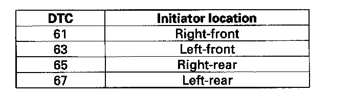

DTC 63
DTC 61, 63, 65, 67: Initiator Circuit Open Detection1. Turn the ignition switch ON (II).
2. Clear the DTC with the HDS.
3. Turn the ignition switch OFF, then turn the ignition switch ON (II) again.
4. Check for DTCs with the HDS, and note the indicated DTC(s).
Is DTC 61, 63, 65, and/or 67 indicated?
YES - Go to step 5.
NO - The system is OK at this time.
5. Turn the ignition switch OFF.
6. Disconnect the appropriate initiator 3P connector.
7. Disconnect the TPMS control unit 20P connector.
8. Check for continuity between TPMS control unit 20P connector terminal No. 20 and appropriate initiator 3P connector terminal No. 1.
Is there continuity?
YES - Go to step 9.
NO - Repair open in the wire between the TPMS control unit and the appropriate initiator.
9. Check for continuity between TPMS control unit 20P connector terminal No. 15 and appropriate initiator 3P connector terminal No. 3.
Is there continuity?
YES - Go to step 10.
NO - Repair open in the wire between the TPMS control unit and the appropriate initiator.
10. Check for continuity between the appropriate TPMS control unit 20P connector terminal and appropriate initiator 3P connector terminal No. 2 (see table).
Is there continuity?
YES - Go to step 11.
NO - Repair open in the wire between the TPMS control unit and the appropriate initiator.
11. Check for noted DTC(s) in step 4.
Were DTC 61, 63, 65, and 67 indicated at the same time?
YES - Check for loose terminals and poor connections at the TPMS control unit. If necessary, substitute a known-good TPMS control unit and recheck.
NO - Go to step 12.
12. Swap a known-good initiator with the initiator indicated by the DTC.

13. Reconnect all connectors.
14. Turn the ignition switch ON (II).
15. Clear the DTC with the HDS.
16. Turn the ignition switch OFF, then turn the ignition switch ON (II) again.
17. Check for DTCs with the HDS, and compare the indicated DTC with the noted DTC(s) in step 4.
Does the indicated DTC change between the initiators that were replaced in step 12?
YES - Replace the appropriate initiator.
NO - Check for loose terminals and poor connections at the TPMS control unit. If necessary, substitute a known-good TPMS control unit and recheck.